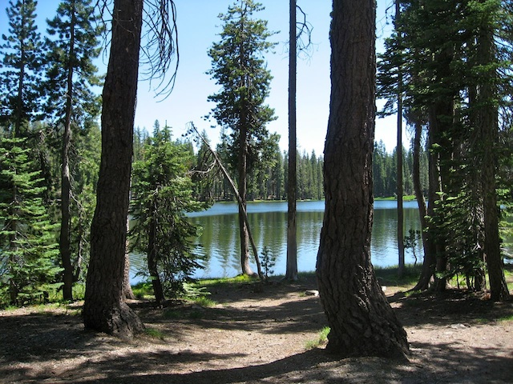
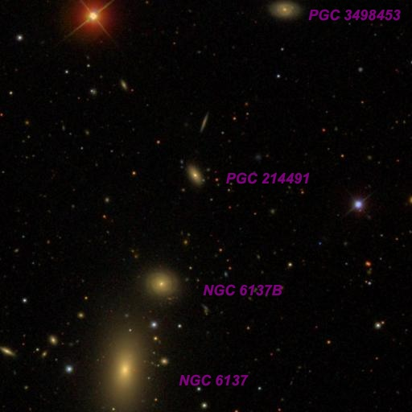
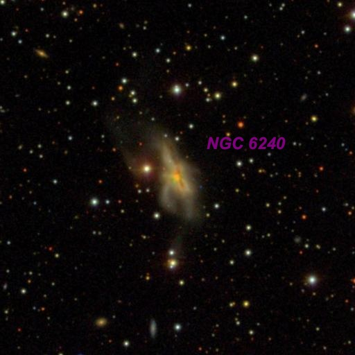
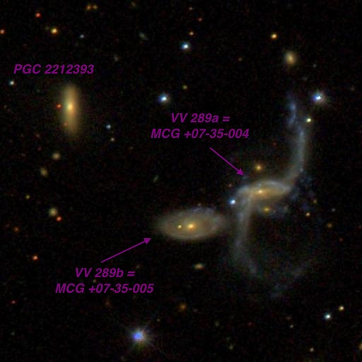
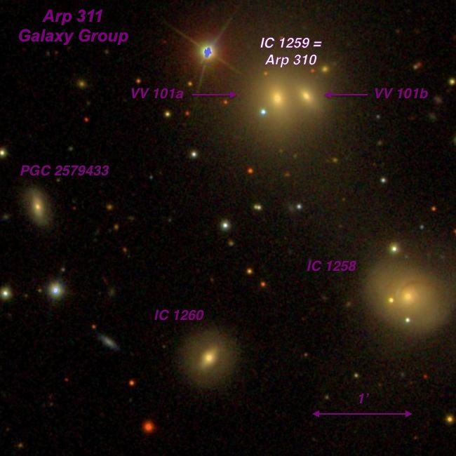
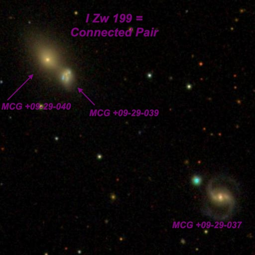
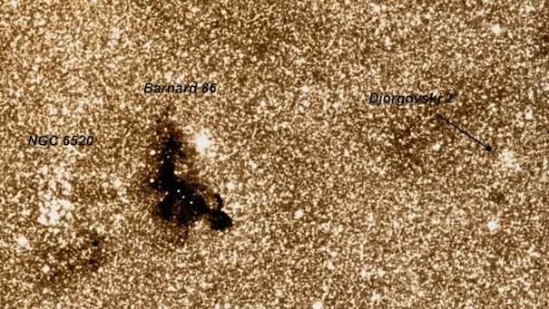
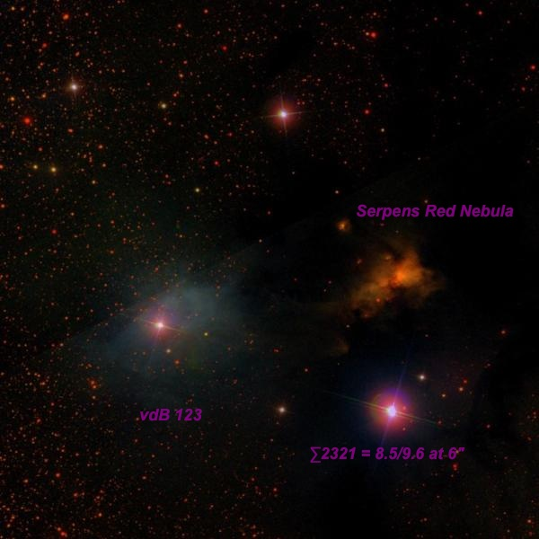

Lassen Volcanic National Park

Last month I met Mark Wagner, Marko Johnston, Carter Scholz, Peter Natscher, David Cooper, and Jimi and Connie Lowrey for 4 nights of camping and observing at Lassen National Park, one of the premier observing sites in northern California. I've been observing off and on here for 15 years and its always a treat to observe in such a beautiful location. A month in advance we reserved 4 campsites at Summit Lake South and planned to observe at Bumpass Hell lot. on July 22 through the 25th (4 nights). Unfortunately, a weather system passed through just before we arrived and Tuesday night was expected to be cloudy, at least early on. After driving up to Bumpass Hell lot before sunset, we found some clouds still passing through but obviously clearing. More of a problem, though, was a very strong wind that was blowing in the from the west. So, we decided at the last minute to take a chance a drive over to the Devastated Lot in hope of calmer conditions. It turned out we had windy conditions there also (though probably less), but the transparency was very good, and despite the wind the seeing was good. Here are highlights from the first night, before we finally gave in to the wind.
Steve Gottlieb

At 375x, NGC 6137 appeared fairly bright, moderately large, elongated 5:3 N-S, 0.8'x0.5', broad concentration with a brighter core. Increases in size with averted vision. A mag 14.3 star is 1' E and a mag 14.8 star is 1' NW. Three galaxies are aligned in a string to the NNW. NGC 6137B = CGCG 196-052, 1.7' NNW, appears fairly faint (B = 15.8), small, round, 18" diameter. PGC 214491 , 3.9' NNW, appears faint (B = 16.3), very small, round, 12"-15" diameter. PGC 3498453 , 7.3' NNW appears faint, small, slightly elongated E-W, 18"x15".

The "Rumpled Starfish" or "Lobster" galaxy appeared fairly faint to moderately bright, irregular but roughly elongated 3:2 SSW-NNE, ~60"x40", though increases in size with averted vision. The surface brightness is irregular, with a mottled texture. The brightest portion has an offset nucleus or knot on the east side. On the northeast side, a faint narrow wing extends to the north. A very short extension was also glimpsed on the southeast side. A mag 13.5 star is 0.6' NE and a mag 15.7 star is 50" SSE of center.
NGC 6240 has dual supermassive black holes and is the closest such galaxy, both in terms of distance from one another and distance from the sun.

Using 375x, the brighter component VV 289a appeared fairly faint, fairly small, oval 2:1 E-W, 24"x12", slightly brighter core, irregular surface brightness. A mag 16.5+ star is at the east edge. Forms a very close, interacting pair with VV 289b = MCG +07-35-005 [0.7' between centers], which appeared very faint to faint, small, elongated 3:2 E-W, 18"x12", brighter nucleus, just detached from brighter VV 289a. PGC 2212393 = MAC 1655+4304 lies 1.6' NE and is faint, very small, round, 12" diameter. Contains a relatively bright quasi-stellar nucleus.

At 375x, the merged contact pair IC 1259 (15" between centers) was a striking sight. VV 101a , the larger and brighter eastern component, appeared fairly faint, small, round, 18" diameter. A mag 15 star is at the southeast edge, just 10" from center. VV 101b , the western component, appeared very faint, extremely small, 8" x 5" SW-NE. In addtion, a mag 12 star lies 0.8' NE. Quite a collection of objects in a small region!
IC 1258 , just 2.2' SW, is another fascinating object because of several nearby stars. It appeared faint or fairly faint, elongated 4:3 WSW-ENE, ~0.4'x0.3'. A mag 15.3 star is off the north side [27" from center] and another mag 15 star is off the southwest side [44" from center]. At 500x, a mag 15.5+ star is at the east edge [10" from center!]. Alvin identifies this object as a close companion galaxy in his Arp observing guide, but it appears completely stellar on the SDSS. Does anyone have additional information on whether IC 1258 is a double galaxy? IC 1260 is 2.5' SSE of IC 1259 and also appeared faint to fairly faint, round, 12" diameter. Megastar misidentifies this galaxy as KAZ 140 (see NED for the correct identification). FInally, PGC 2579433 = MAC 17275829 at 2.5' ESE of IC 1259 is the toughest of the group and logged as extremely faint, roundish, 8" diameter, required averted vision.

At 375x, this interacting pair was cleanly resolved, although essentially tangent [20" between centers]. Appears "peanut-shaped", oriented NE-SW, with the brighter NE galaxy (MCG +09-29-040 at V = 14.7) at 0.3' diameter. The fainter SW galaxy ( MCG +09-29-039 at V = 15.8) was 0.2' or slightly smaller in size. MCG +09-29-037 lies 3.0' SW and appeared extremely to very faint, only 9"x6" (core of galaxy). A mag 14.6 star is just off the NE end, 0.4' from center.

Excellent view of this globular cluster (discovered in 1987). At 375x, a few obvious stars are resolved around the edges and superimposed on the 2' mottled glow. With careful viewing the cluster was sparkling with a number of very faint stars, mag 15.5 and fainter, popping in and out of view. Roughly 20 stars were resolved, although it was difficult to individually count. Of course, the main attraction is the location -- 20' west of Barnard 86 , the "Inkspot" Dark Nebula and the rich cluster NGC 6520 !

This unusual Red Reflection Nebula was seen at 175x, knowing the exact position. It appeared extremely faint, small, round, ~15"-20" diameter. Using averted vision the glow popped ~20% of time, and was only seen for brief glimpses, though confirmed with certainty. The Serpens Nebula is located 7' WNW of mag 9.8 HD 170634 , the illuminating star of reflection nebula vdB 123 , and just west of the line connecting the double star STF 2321 = 8.5/9.6 at 6" and a mag 10.5 star 9' to its NNE.
The "Serpens Nebula" is a very red (continuum) reflection nebula illuminated by the pre-main sequence star [SVS76] Ser 2 = HBC 672. It is located within the core of the Serpens Dark Cloud, a dusty star-forming region associated with Sh 2-68, and includes several HH objects -- HH 458 /459/478. It was included in the TSP 2014 "Seeing Red" advanced observer's list.